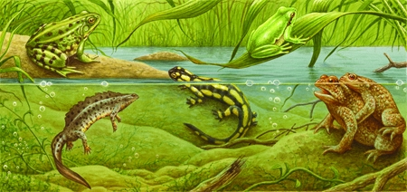

Gli anfibi
Gli anfibi sono molto legati all'acqua, in quanto la maggior parte di essi trascorre una fase della propria vita sulla terraferma e una fase nell'acqua. Questi vertebrati ectotermi (a sangue freddo) sono suddivisi in 3 gruppi: i tritoni e le salamandre (Caudati); le rane e i rospi (Anuri); e le lumbriciformi cecilie (Gimnofoni). In genere vivono vinito all'acqua in regioni tropicali e temperate, ma alcuni si sono adattati a sopravvivere al freddo e alla siccità.

Metamorfosi
Il ciclo di vita degli anfibi, e in particolare delle rane, consiste in tre stadi: uovo, larva, adulto. Il passaggio dallo stadio larvale a quello di adulto richiede una trasformazione radicale nota come "metamorfosi".

1. Uova
Le uova degli anfibi non hanno il guscio, ma sono racchiuse in un involucro gelatinoso che si avvizzisce in assenza di umidità. Tipicamente, le uova vengono deposte nell'acqua ma, data la scarsità di spazi acquatici adatti alla riproduzione, molti rospi e rane si riuniscono in grandi gruppi per riprodursi. Il grande agglomerato di uova può tra l'altro trattenere maggior calore, anticipando la schiusa. Spesso vengono utilizzati stagni e torrenti che si inaridiscono per parte dell'anno in modo da proteggere uova e girini dai predatori.Il numero delle uova depositate varia enormemente: alcuni ne depongono solo una o due per volta, altri fino a 50 000.

2. Larva
Le uova si schiudono circa 6 giorni dopo la fecondazione, dando vita a minuscole larve, chiamate "girini" nelle rane e nei rospi. Il loro corpo è sferico, con una coda ben sviluppata e branchie esterne. Nel giro di 4 settimane, le branchie vengono riassorbite e sostituite da branchie interne. Tra la sesta e la nona settimana, si sviluppano gli arti posteriori, la testa si ridefinisce meglio e il corpo assume una forma più allungata. Al quarto stadio, le zampe posteriori sono ben funzionanti e le branchie interne sono state sostituite dai polmoni. A 9 settimane, dopo la comparsa degli arti interiori, il corpo del girino è simile a quello di un adulto. La coda viene poi gradualmente riassorbita nel corpo finché, a circa 16 settimane, non scompare del tutto.

3. Adulto
Le larve degli anfibi sono molto diverse dagli adulti per l'aspetto, la dieta e lo stile di vita. La metamorfosi comporta una massiccia ricostruzione di tutte le parti del corpo. I girini sono erbivori e filtrano la microflora in sospensione dell'acqua oppure raschiano le alghe che ricoprono piante, rocce e altri oggetti sommersi. Gli adulti, invece, sono carnivori e si nutrono di prede vive, che ingoiano intere. Di solito attendono finché una preda si porta entro il raggio della loro lunga lingua appiccicosa o del loro affondo a bocca spalancata.

Rana o rospo?

Le rane e i rospi sono tra i tre gruppi di anfibi quello di gran lunga più grande e meglio conosciuto. Tra rane e rospi non c'è una distinzione netta: il termine "rospo" viene spesso usato per riferirsi esclusivamente ai membri del genere Bufo, ma è anche usato in senso lato per descrivere ogni specie di anfibio terrestre dai movimenti lenti, dal corpo tozzo e dalla pelle verrucosa. Rospe e rane nel senso comune possono essere quindi distinti per le seguenti caratteristiche.
I tratti fisici:
- Le zampe delle rane sono molto lunghe, dato che saltano più spesso e più in alto dei rospi. Quelle dei rospi sono più piccole perché tendono a camminare più spesso.
- La forma della rana è più slanciata e atletica, quella del rospo è tozza, paffuta e corta.
- La pelle della rana è più liscia, mentre quella del rospo ha delle escrescenze superficiali simili a delle verruche.
- La colorazione dei rospi spazia in un'ampia varietà di sfumature, che vanno dal verde scuro a quello oliva. Le rane in genere sono giallastre e la loro pelle assume le tonalità più chiare delle varie sfumature di verde. Tuttavia i colori possono dipendere da altri fattori: per esempio le rane velenose possono avere colori particolari.
Il comportamento:
- Spostarsi: Le rane saltano molto in alto e in lungo. I rospi fanno piccoli saltelli e non sono in grado di percorrere grandi distanze in questo modo; più spesso camminano.
- Il luogo: Le rane tendono a stare vicino agli specchi d'acqua per sopravvivere, mentre i rospi passano spesso tempo lontano dagli stagni.